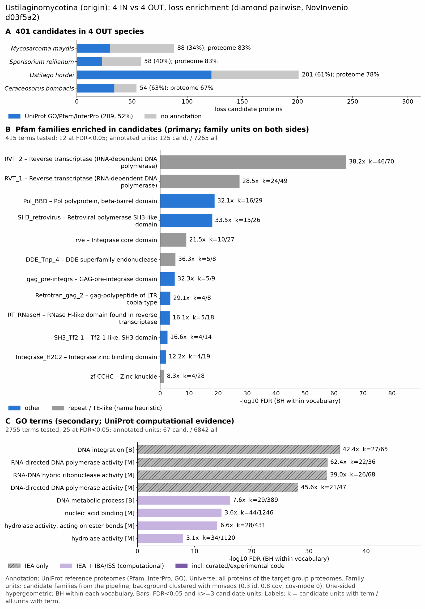

yc ustilaginomycotina: functional enrichment (loss)
One-sided hypergeometric test per term; Benjamini-Hochberg FDR within each scope, level and vocabulary. Candidates are the loss candidates: gene families present in the OUT group and absent from the IN group. Universe: proteome. Background clustered: True (28187 sequences in 12495 clusters, mmseqs easy-cluster --min-seq-id 0.3 -c 0.8). Family level: one unit per candidate family and per background cluster.
Sources: Pfam: 2026-01-27-Pfam38.2; InterPro entries: 110.0; GO: releases/2026-07-26; analysis generated 2026-10-24T14:41:04. Source tables: /bigdata/stajichlab/jstajich/projects/NovInvenio_Investigations/studies/fungi/yeast_convergence/yc_ustilaginomycotina/analysis/enrichment/outputs/loss/proteome_clustered.
Full record: PROVENANCE. Run report: report.html.
- Annotation provenance is not fully recorded: PROVENANCE.yaml lists the per-species annotation files and their checksums, but not the UniProt release they come from.
- GO results are secondary. GO annotations include computational evidence (IEA, IBA); the GO evidence column shows if a term has non-IEA support.
- Candidate families (pipeline clustering of candidates) and background clusters (mmseqs clustering of the background proteome) are made by different runs, so family-level counts are not fully comparable.
- Low annotation: the candidate set has less than 50% annotation for Pfam 46.9%, GO 25.2%. Enrichment for these vocabularies has low power.
Summary figure

Annotation coverage
Fraction of proteins with at least one term per vocabulary. Universe = all proteins of the species; candidates = the candidate set.
| Species | Set | Proteins | Pfam | Pfam clan | InterPro | GO | Any |
|---|---|---|---|---|---|---|---|
| Mycomayd | universe | 6788 | 77.0% | 62.2% | 82.2% | 73.8% | 82.7% |
| Mycomayd | candidates | 88 | 30.7% | 19.3% | 34.1% | 17.1% | 34.1% |
| Sporreil | universe | 6673 | 78.0% | 63.1% | 83.2% | 73.6% | 83.4% |
| Sporreil | candidates | 58 | 37.9% | 19.0% | 39.7% | 20.7% | 39.7% |
| Ustihord | universe | 7110 | 72.5% | 58.8% | 78.2% | 68.1% | 78.4% |
| Ustihord | candidates | 201 | 55.2% | 46.8% | 60.7% | 26.4% | 60.7% |
| Cerabomb | universe | 8017 | 61.2% | 49.8% | 66.4% | 57.3% | 66.6% |
| Cerabomb | candidates | 54 | 51.8% | 46.3% | 63.0% | 38.9% | 63.0% |
| ALL_OUT | universe | 28588 | 71.7% | 58.1% | 77.0% | 67.7% | 77.3% |
| ALL_OUT | candidates | 401 | 46.9% | 36.7% | 52.1% | 25.2% | 52.1% |
Tests summary
Per vocabulary: terms with FDR < 0.05 / terms tested. Protein level counts proteins; family level counts candidate families and background clusters.
| Scope | Level | Cand. units | Pfam sig / tested | Pfam clan sig / tested | InterPro sig / tested | GO sig / tested |
|---|---|---|---|---|---|---|
| whole_set | family | 264 | 12 / 415 | 4 / 250 | 20 / 1000 | 25 / 2755 |
| whole_set | protein | 401 | 19 / 1317 | 6 / 383 | 35 / 2968 | 44 / 4369 |
| Cerabomb | family | 52 | 11 / 212 | 4 / 196 | 15 / 591 | 11 / 1859 |
| Cerabomb | protein | 54 | 11 / 232 | 4 / 201 | 16 / 649 | 14 / 1890 |
| Mycomayd | family | 76 | 0 / 239 | 0 / 201 | 2 / 630 | 2 / 2254 |
| Mycomayd | protein | 88 | 1 / 268 | 0 / 209 | 1 / 703 | 2 / 2328 |
| Sporreil | family | 57 | 0 / 244 | 0 / 199 | 1 / 635 | 0 / 2174 |
| Sporreil | protein | 58 | 1 / 264 | 0 / 206 | 2 / 692 | 0 / 2247 |
| Ustihord | family | 152 | 6 / 230 | 3 / 197 | 13 / 614 | 28 / 2156 |
| Ustihord | protein | 201 | 7 / 262 | 3 / 203 | 19 / 695 | 31 / 2229 |
Top 25 Pfam terms (whole set, family level)
25 rows shown, ordered by FDR then p-value; 12 have FDR < 0.05 (bold).
| Term | Name | k / N cand. | n / M bg | Fold | FDR (BH) |
|---|---|---|---|---|---|
| PF07727 | RVT_2: Reverse transcriptase (RNA-dependent DNA polymerase) | 46 / 125 | 70 / 7265 | 38.193 | 6.59e-65 |
| PF00078 | RVT_1: Reverse transcriptase (RNA-dependent DNA polymerase) | 24 / 125 | 49 / 7265 | 28.467 | 4.15e-28 |
| PF22936 | Pol_BBD: Pol polyprotein, beta-barrel domain | 16 / 125 | 29 / 7265 | 32.066 | 1.72e-19 |
| PF25597 | SH3_retrovirus: Retroviral polymerase SH3-like domain | 15 / 125 | 26 / 7265 | 33.531 | 9.93e-19 |
| PF00665 | rve: Integrase core domain | 10 / 125 | 27 / 7265 | 21.526 | 8.65e-10 |
| PF13359 | DDE_Tnp_4: DDE superfamily endonuclease | 5 / 125 | 8 / 7265 | 36.325 | 5.17e-06 |
| PF13976 | gag_pre-integrs: GAG-pre-integrase domain | 5 / 125 | 9 / 7265 | 32.289 | 9.84e-06 |
| PF14223 | Retrotran_gag_2: gag-polypeptide of LTR copia-type | 4 / 125 | 8 / 7265 | 29.06 | 2.88e-04 |
| PF17917 | RT_RNaseH: RNase H-like domain found in reverse transcriptase | 5 / 125 | 18 / 7265 | 16.144 | 4.60e-04 |
| PF24626 | SH3_Tf2-1: Tf2-1-like, SH3 domain | 4 / 125 | 14 / 7265 | 16.606 | 0.003 |
| PF17921 | Integrase_H2C2: Integrase zinc binding domain | 4 / 125 | 19 / 7265 | 12.236 | 0.010 |
| PF00098 | zf-CCHC: Zinc knuckle | 4 / 125 | 28 / 7265 | 8.303 | 0.043 |
| PF17919 | RT_RNaseH_2: RNase H-like domain found in reverse transcriptase | 3 / 125 | 14 / 7265 | 12.454 | 0.050 |
| PF30863 | PRO_PEG10-RTL1: PEG10/RTL1 protease domain | 2 / 125 | 5 / 7265 | 23.248 | 0.079 |
| PF30901 | PEG10-RTL1_C-capsid: PEG10/RTL1, C-terminal capsid-like domain | 2 / 125 | 5 / 7265 | 23.248 | 0.079 |
| PF00385 | Chromo: Chromo (CHRromatin Organisation MOdifier) domain | 3 / 125 | 21 / 7265 | 8.303 | 0.137 |
| PF29109 | UMAG_10076_C: UMAG_10076 C-terminal domain | 2 / 125 | 16 / 7265 | 7.265 | 0.735 |
| PF00293 | NUDIX: NUDIX domain | 2 / 125 | 17 / 7265 | 6.838 | 0.778 |
| PF10342 | Kre9_KNH: Kre9/KNH-like N-terminal Ig-like domain | 1 / 125 | 5 / 7265 | 11.624 | 1.000 |
| PF13460 | NAD_binding_10: NAD(P)H-binding | 1 / 125 | 5 / 7265 | 11.624 | 1.000 |
| PF30297 | UMAG_00792: Secreted cysteine-rich protein UMAG_00792 | 1 / 125 | 5 / 7265 | 11.624 | 1.000 |
| PF03061 | 4HBT: Thioesterase superfamily | 1 / 125 | 7 / 7265 | 8.303 | 1.000 |
| PF22669 | Exo_endo_phos2: Endonuclease/Exonuclease/phosphatase family 2 | 1 / 125 | 9 / 7265 | 6.458 | 1.000 |
| PF07690 | MFS_1: Major Facilitator Superfamily | 2 / 125 | 83 / 7265 | 1.4 | 1.000 |
| PF00076 | RRM_1: RNA recognition motif | 2 / 125 | 85 / 7265 | 1.368 | 1.000 |
Top 25 InterPro terms (whole set, family level)
25 rows shown, ordered by FDR then p-value; 20 have FDR < 0.05 (bold).
| Term | Name | k / N cand. | n / M bg | Fold | FDR (BH) |
|---|---|---|---|---|---|
| IPR043502 | Homologous_superfamily:DNA/RNA polymerase superfamily | 53 / 143 | 105 / 7978 | 28.161 | 8.54e-65 |
| IPR013103 | Domain:Reverse transcriptase, RNA-dependent DNA polymerase | 46 / 143 | 70 / 7978 | 36.662 | 1.95e-63 |
| IPR036397 | Homologous_superfamily:Ribonuclease H superfamily | 35 / 143 | 118 / 7978 | 16.548 | 1.07e-31 |
| IPR039537 | Family:Retrotransposon Ty1/copia-like | 24 / 143 | 39 / 7978 | 34.332 | 8.19e-31 |
| IPR001584 | Domain:Integrase, catalytic core | 26 / 143 | 57 / 7978 | 25.448 | 5.64e-29 |
| IPR000477 | Domain:Reverse transcriptase domain | 25 / 143 | 51 / 7978 | 27.348 | 6.89e-29 |
| IPR012337 | Homologous_superfamily:Ribonuclease H-like superfamily | 31 / 143 | 111 / 7978 | 15.581 | 3.23e-27 |
| IPR054722 | Domain:Retrovirus-related Pol polyprotein from transposon TNT 1-94-like, beta-barrel domain | 16 / 143 | 29 / 7978 | 30.781 | 3.36e-19 |
| IPR043128 | Homologous_superfamily:Reverse transcriptase/Diguanylate cyclase domain | 18 / 143 | 44 / 7978 | 22.823 | 9.43e-19 |
| IPR057670 | Domain:Retroviral polymerase, SH3-like domain | 15 / 143 | 26 / 7978 | 32.187 | 1.96e-18 |
| IPR052055 | Family:Hepadnavirus polymerase/reverse transcriptase | 10 / 143 | 10 / 7978 | 55.79 | 2.27e-16 |
| IPR053134 | Family:RNA-directed DNA polymerase homolog | 7 / 143 | 11 / 7978 | 35.503 | 1.33e-08 |
| IPR027806 | Domain:Harbinger transposase-derived nuclease domain | 5 / 143 | 8 / 7978 | 34.869 | 7.12e-06 |
| IPR025724 | Domain:GAG-pre-integrase domain | 5 / 143 | 9 / 7978 | 30.995 | 1.47e-05 |
| IPR061502 | Domain:Copia/RE1/RE2-like, N-terminal domain | 4 / 143 | 8 / 7978 | 27.895 | 4.37e-04 |
| IPR041373 | Domain:Reverse transcriptase, RNase H-like domain | 5 / 143 | 18 / 7978 | 15.497 | 7.66e-04 |
| IPR056924 | Domain:Tf2-1-like, SH3-like domain | 4 / 143 | 14 / 7978 | 15.94 | 0.005 |
| IPR032567 | Family:RTL1/3-8/LDOC-like | 3 / 143 | 6 / 7978 | 27.895 | 0.006 |
| IPR041588 | Domain:Integrase zinc-binding domain | 4 / 143 | 19 / 7978 | 11.745 | 0.016 |
| IPR023779 | Conserved_site:Chromo domain, conserved site | 3 / 143 | 10 / 7978 | 16.737 | 0.031 |
| IPR041577 | Domain:Reverse transcriptase/retrotransposon-derived protein, RNase H-like domain | 3 / 143 | 14 / 7978 | 11.955 | 0.085 |
| IPR021109 | Homologous_superfamily:Aspartic peptidase domain superfamily | 4 / 143 | 30 / 7978 | 7.439 | 0.086 |
| IPR001878 | Domain:Zinc finger, CCHC-type | 5 / 143 | 54 / 7978 | 5.166 | 0.117 |
| IPR063300 | Domain:PEG10/RTL1, C-terminal capsid-like domain | 2 / 143 | 5 / 7978 | 22.316 | 0.123 |
| IPR063610 | Domain:PEG10/RTL1, protease domain | 2 / 143 | 5 / 7978 | 22.316 | 0.123 |
Top 15 GO terms (whole set, family level) — secondary, computational evidence (IEA/IBA) included
15 rows shown, ordered by FDR then p-value; 15 have FDR < 0.05 (bold).
| Term | Name | k / N cand. | n / M bg | Fold | FDR (BH) | GO evidence | Families with non-IEA |
|---|---|---|---|---|---|---|---|
| GO:0015074 | biological_process:DNA integration | 27 / 67 | 65 / 6842 | 42.419 | 4.26e-36 | IEA_only | 0 |
| GO:0003964 | molecular_function:RNA-directed DNA polymerase activity | 22 / 67 | 36 / 6842 | 62.406 | 6.38e-34 | IEA_only | 0 |
| GO:0004523 | molecular_function:RNA-DNA hybrid ribonuclease activity | 26 / 67 | 68 / 6842 | 39.046 | 6.94e-34 | IEA_only | 0 |
| GO:0016891 | molecular_function:RNA endonuclease activity producing 5'-phosphomonoesters, hydrolytic mechanism | 26 / 67 | 82 / 6842 | 32.379 | 1.82e-31 | IEA_only | 0 |
| GO:0034061 | molecular_function:DNA polymerase activity | 22 / 67 | 53 / 6842 | 42.389 | 2.79e-29 | IEA_only | 0 |
| GO:0004521 | molecular_function:RNA endonuclease activity | 26 / 67 | 99 / 6842 | 26.819 | 3.42e-29 | IEA_only | 0 |
| GO:0003887 | molecular_function:DNA-directed DNA polymerase activity | 21 / 67 | 47 / 6842 | 45.628 | 8.25e-29 | IEA_only | 0 |
| GO:0004540 | molecular_function:RNA nuclease activity | 26 / 67 | 120 / 6842 | 22.126 | 6.69e-27 | IEA_only | 0 |
| GO:0004519 | molecular_function:endonuclease activity | 26 / 67 | 149 / 6842 | 17.819 | 2.55e-24 | IEA_only | 0 |
| GO:0004518 | molecular_function:nuclease activity | 26 / 67 | 187 / 6842 | 14.198 | 1.11e-21 | IEA_only | 0 |
| GO:0016779 | molecular_function:nucleotidyltransferase activity | 22 / 67 | 115 / 6842 | 19.536 | 4.15e-21 | IEA_only | 0 |
| GO:0006259 | biological_process:DNA metabolic process | 29 / 67 | 389 / 6842 | 7.613 | 6.93e-17 | has_non_IEA | 1 |
| GO:0140097 | molecular_function:catalytic activity, acting on DNA | 22 / 67 | 194 / 6842 | 11.581 | 5.20e-16 | IEA_only | 0 |
| GO:0003676 | molecular_function:nucleic acid binding | 44 / 67 | 1246 / 6842 | 3.606 | 2.01e-15 | has_non_IEA | 1 |
| GO:0140098 | molecular_function:catalytic activity, acting on RNA | 26 / 67 | 333 / 6842 | 7.973 | 2.29e-15 | IEA_only | 0 |
Actin cytoskeleton controls
Known actin-related families and how many of their proteins pass each filter. Protein ID columns are left out.
| control | pfam_ids | desc_regex | OUT_universe | OUT_in_matrix | OUT_pass_outgroup_rule | candidates | near_miss_in1 | near_miss_in2 | n_Mycomayd | n_Sporreil | n_Ustihord | n_Cerabomb | n_Malaglob | n_Malasymp | n_Moesaphi | n_Kalmbras |
|---|---|---|---|---|---|---|---|---|---|---|---|---|---|---|---|---|
| Arp2/3 ARPC2 (P34-Arc) | PF04045 | 4 | 4 | 4 | 0 | 0 | 0 | 1 | 1 | 1 | 1 | 1 | 1 | 1 | 1 | |
| Arp2/3 ARPC3 (P21-Arc) | PF04062 | 4 | 4 | 4 | 0 | 0 | 0 | 1 | 1 | 1 | 1 | 1 | 1 | 1 | 1 | |
| Arp2/3 ARPC4 | PF05856 | 3 | 3 | 3 | 0 | 0 | 3 | 1 | 1 | 0 | 1 | 0 | 1 | 0 | 1 | |
| Arp2/3 ARPC5 (P16-Arc) | PF04699 | 4 | 4 | 4 | 0 | 0 | 0 | 1 | 1 | 1 | 1 | 1 | 1 | 1 | 1 | |
| Arp2/3 ARPC1 (description only) | arp2/3 complex.*(41|p41|subunit 1)|ARPC1 | 4 | 4 | 4 | 0 | 0 | 0 | 1 | 1 | 1 | 1 | 1 | 1 | 1 | 1 | |
| Arp2 / Arp3 (description only) | actin-related protein (2|3)\b|\bARP[23]\b | 24 | 24 | 24 | 0 | 0 | 3 | 7 | 6 | 5 | 6 | 6 | 8 | 6 | 6 | |
| WAVE complex NCKAP1 | PF09735 | 0 | 0 | 0 | 0 | 0 | 0 | 0 | 0 | 0 | 0 | 0 | 0 | 0 | 0 | |
| WAVE complex CYFIP (FragX_IP) | PF05994 | 0 | 0 | 0 | 0 | 0 | 0 | 0 | 0 | 0 | 0 | 0 | 0 | 0 | 0 | |
| WAVE complex ABI | PF07815|PF27594 | 0 | 0 | 0 | 0 | 0 | 0 | 0 | 0 | 0 | 0 | 0 | 0 | 0 | 0 | |
| SCAR/WAVE (SCAR_helical) | PF27569 | 0 | 0 | 0 | 0 | 0 | 0 | 0 | 0 | 0 | 0 | 0 | 0 | 0 | 0 | |
| WASP family (WH1) | PF00568 | 4 | 4 | 4 | 0 | 0 | 0 | 1 | 1 | 1 | 1 | 1 | 1 | 0 | 1 | |
| WH2 motif (WASP, WAVE, others) | PF02205 | 8 | 8 | 8 | 3 | 1 | 0 | 2 | 2 | 2 | 2 | 1 | 2 | 1 | 1 | |
| Formin FH2 | PF02181 | 8 | 8 | 8 | 0 | 0 | 1 | 2 | 2 | 2 | 2 | 1 | 1 | 2 | 2 | |
| Formin Drf_GBD / Drf_FH3 / Drf_DAD | PF06371|PF06367|PF06345 | 8 | 8 | 8 | 0 | 0 | 1 | 2 | 2 | 2 | 2 | 2 | 2 | 2 | 2 | |
| Ena/VASP (VASP_tetra) | PF08776 | 0 | 0 | 0 | 0 | 0 | 0 | 0 | 0 | 0 | 0 | 0 | 0 | 0 | 0 | |
| Coronin (description only) | coronin | 5 | 5 | 5 | 0 | 0 | 0 | 1 | 1 | 1 | 2 | 1 | 1 | 1 | 1 | |
| Cortactin (HS1_rep) | PF02218 | 0 | 0 | 0 | 0 | 0 | 0 | 0 | 0 | 0 | 0 | 0 | 0 | 0 | 0 | |
| Myosin 2 tail (Myosin_tail_1) | PF01576 | 1 | 1 | 1 | 0 | 0 | 0 | 0 | 0 | 0 | 1 | 0 | 0 | 0 | 0 | |
| Myosin head (all myosins) | PF00063 | 17 | 17 | 17 | 0 | 0 | 0 | 4 | 4 | 4 | 5 | 5 | 5 | 3 | 4 |
Page written by bin/generate_enrichment_page.py.